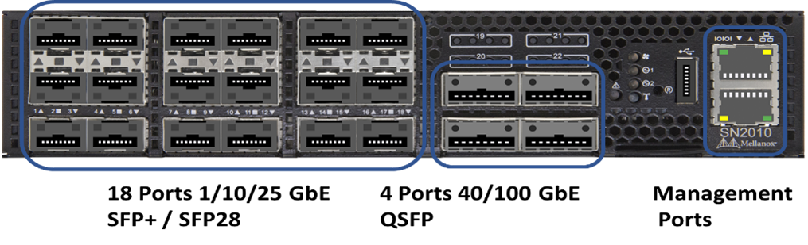

ドキュメントの変更をリクエスト
ドキュメントの変更をリクエスト GitHub で編集
GitHub で編集 寄稿者向けガイド
寄稿者向けガイドSN2010 、 SN2100 、および SN2700 の各スイッチを交換してください
ネットアップが提供するベストプラクティスと手順に従って、障害のある SN2000 シリーズスイッチを無停止で交換できます。
-
Putty がラップトップにインストールされていること、および出力をキャプチャしたことを確認します。このビデオでは、 Putty を設定して出力セッションをキャプチャする方法を紹介しています。
-
交換の前後に NetApp Config Advisor を実行していることを確認してください。これは、メンテナンスの開始前に他の問題を特定するのに役立ちます。Config Advisor をダウンロードしてインストールし、からクイックスタートガイドにアクセスします "こちら（ログインが必要です）"。
-
電源ケーブル、基本的な手工具、およびラベルを用意します。
-
2 時間から 4 時間のメンテナンス期間を計画していることを確認します。
-
以下のスイッチポートを確認してください。



この手順の手順は、次の順序で実行する必要があります。これにより、スイッチの交換前にダウンタイムを最小限に抑え、交換用スイッチを事前に設定することができます。

|
ガイダンスが必要な場合は、ネットアップサポートにお問い合わせください。 |
故障したスイッチを交換する準備をします
障害のあるスイッチを交換する前に、次の手順を実行します。
-
交換用スイッチのモデルが障害のあるスイッチと同じであることを確認します。
-
障害のあるスイッチに接続されているすべてのケーブルにラベルを付けます。
-
スイッチ構成ファイルが保存されている外部ファイルサーバを特定します。
-
次の情報を入手しておきます。
-
初期設定に使用されるインターフェイス： RJ-45 ポートまたはシリアルターミナルインターフェイス。
-
スイッチアクセスに必要なクレデンシャル。障害が発生していないスイッチの管理ポートの IP アドレスと、障害が発生したスイッチです。
-
管理アクセス用のパスワード。
-
構成ファイルを作成します
スイッチは、作成した構成ファイルを使用して設定できます。次のいずれかのオプションを選択して、スイッチの構成ファイルを作成します。
| オプション | 手順 |
|---|---|
障害が発生したスイッチからバックアップ構成ファイルを作成します |
|
ファイルを変更して、バックアップ構成ファイルを作成します 別のスイッチ |
|
障害のあるスイッチを取り外し、交換用スイッチを取り付けます
手順を実行して障害のあるスイッチを取り外し、交換用スイッチを取り付けます。
-
障害が発生したスイッチの電源ケーブルを確認します。
-
スイッチの再起動後に、電源ケーブルにラベルを付けて取り外します。
-
すべてのケーブルにラベルを付けてスイッチから取り外し、スイッチ交換時の破損を防ぐために固定します。
-
ラックからスイッチを取り外します。
-
交換用スイッチをラックに取り付けます。
-
電源ケーブルと管理ポートケーブルを接続します。
AC 電源を投入すると、スイッチの電源が自動的にオンになります。電源ボタンがありません。システムステータス LED が緑色になるまで、最大 5 分かかることがあります。 -
RJ-45 管理ポートまたはシリアルターミナルインターフェイスを使用してスイッチに接続します。
スイッチのオペレーティングシステムのバージョンを確認します
スイッチの OS ソフトウェアバージョンを確認します。障害が発生したスイッチと正常なスイッチのバージョンが一致している必要があります。
-
SSH を使用して、スイッチにリモート接続します。
-
コンフィギュレーションモードを開始します。
-
「 show version 」コマンドを実行します。次の例を参照してください。
SFPS-HCI-SW02-A (config) #show version Product name: Onyx Product release: 3.7.1134 Build ID: #1-dev Build date: 2019-01-24 13:38:57 Target arch: x86_64 Target hw: x86_64 Built by: jenkins@e4f385ab3f49 Version summary: X86_64 3.7.1134 2019-01-24 13:38:57 x86_64 Product model: x86onie Host ID: 506B4B3238F8 System serial num: MT1812X24570 System UUID: 27fe4e7a-3277-11e8-8000-506b4b891c00 Uptime: 307d 3h 6m 33.344s CPU load averages: 2.40 / 2.27 / 2.21 Number of CPUs: 4 System memory: 3525 MB used / 3840 MB free / 7365 MB total Swap: 0 MB used / 0 MB free / 0 MB total
-
バージョンが一致しない場合は、 OS をアップグレードする必要があります。を参照してください "Mellanox ソフトウェアアップグレードガイド" を参照してください。
交換用スイッチを設定します
次の手順を実行して、交換用スイッチを設定します。を参照してください "Mellanox の構成管理" を参照してください。
-
該当するオプションから選択します。
| オプション | 手順 | ||
|---|---|---|---|
bin 構成ファイルから |
|
||
テキストファイルから |
|
交換を完了します
手順を実行して交換手順を完了します。
-
ケーブルを挿入するときは、ラベルを参考にしてください。
-
NetApp Config Advisor を実行します。からクイックスタートガイドにアクセスします "こちら（ログインが必要です）"。
-
ストレージ環境を確認します。
-
障害が発生したスイッチをネットアップに返却します。